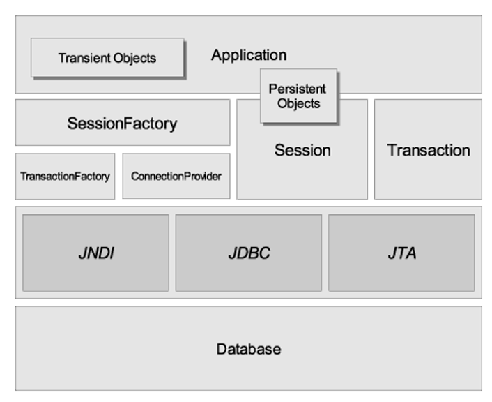

2 Hibernate.es
2. Hibernate
Hibernate es un framework ORM para Java, que facilita la correspondencia de atributos entre una base de datos relacional y el modelo de objetos de nuestra aplicación mediante archivos XML o anotaciones en los beans de entidad. Es un software libre distribuido bajo la licencia GPL 2.0, por lo que puede utilizarse en aplicaciones comerciales.
La función principal de Hibernate será ofrecer al programador las herramientas para detallar su modelo de datos y las relaciones entre ellos, de modo que sea el propio ORM el que interactúe con la base de datos, mientras que el desarrollador se dedica a manipular objetos.
Además, ofrece un lenguaje de consulta, llamado HQL (Hibernate Query Language), de modo que sea el propio ORM el que traduzca este lenguaje al de cada motor de base de datos, manteniendo así la portabilidad a costa de un ligero aumento en el tiempo de ejecución.

Cuando se crean objetos, éstos son volátiles o temporales (se destruirán cuando la aplicación finalice). Cuando queremos almacenarlos con Hibernate, son rastreados con un mecanismo llamado Session. También se rastrean los objetos cargados desde las bases de datos. Si lo deseamos, podemos finalizar el rastreo, eliminando el objeto cuando ya no lo necesitemos.
Además, se proporciona un lenguaje de consulta, HQL o Hibernate Query Language, basado en OQL. La parte subyacente de la sesión, como puede verse, permite el uso de varias tecnologías, incluyendo JDBC para conectarse al SGBD necesario.
2.1 Configuración
Hibernate, como un buen framework, no necesita una instalación, puesto que está integrado en nuestro proyecto como librerías. Podríamos optar por instalar muchas librerías jar, pero es mucho mejor utilizar un gestor de paquetes para automatizar esta tarea. El proceso de construcción del proyecto será más fácil al final.
Utilizaremos Maven como gestor de paquetes.
2.2 Dependencias.
En nuestros proyectos se utilizarán dos herramientas básicas: Hibernate y un controlador para conectarse a la base de datos seleccionada. Obviamente, es necesario añadir las dependencias al gestor de paquetes. En Maven, las dependencias se incluyen en el archivo Pom.xml, en la carpeta raíz de nuestro proyecto. Dentro de la etiqueta <dependencias> hay que añadir:
<!-- https://mvnrepository.com/artifact/mysql/mysql-connector-java -->
<dependency>
<groupId>mysql</groupId>
<artifactId>mysql-connector-java</artifactId>
<version>8.0.27</version>
</dependency>
<!-- https://mvnrepository.com/artifact/org.hibernate/hibernate-core -->
<dependency>
<groupId>org.hibernate</groupId>
<artifactId>hibernate-core</artifactId>
<version>5.6.3.Final</version>
</dependency>
Si has elegido a Gradle como gestor de paquetes, tu build.gradle debería ser el siguiente:
dependencias {
// https://mvnrepository.com/artifact/mysql/mysql-connector-java
implementation group: 'mysql', name: 'mysql-connector-java', version: '8.0.27'
// https://mvnrepository.com/artifact/org.hibernate/hibernate-core
implementation group: 'org.hibernate', name: 'hibernate-core', version: '5.6.3.Final'
}
Recuerda...
Recuerda que puedes encontrar los paquetes en https://mvnrepository.com/repos/central
2.3. Estructura del proyecto
Una vez que hemos añadido las dependencias, debemos crear una estructura de proyecto para organizar nuestras clases, con el objetivo de separar la lógica del programa. A continuación, mostraremos una breve descripción, profundizando en cada punto más adelante.
2.3.1. Beans
Los Beans son la evolución de los POJOS que hemos estudiado en unidades anteriores. Recuerda que estas clases son objetos comunes, sin pertenecer a ningún árbol de herencia y sin implementar interfaz alguna. Se utilizan para almacenar información sobre un concepto concreto (si necesito un coche...crea un coche).
Como extensión de los POJOs, aparecen los Beans, sin restricciones en los atributos, constructores y herencia. Tienen algunas restricciones:
- Sus atributos deben ser
private(encapsulación). - Deben implementar la interfaz
Serializable. - Deben tener getters y setters públicos.
- Deben tener un constructor genérico (sin argumentos).
Recuerda
La serialización en tiempo de ejecución asocia a cada clase serializable un número de versión, llamado serialVersionUID, que se utiliza durante la deserialización para verificar que el emisor y el receptor de un objeto serializado han cargado clases para ese objeto que son compatibles en relación a la serialización.
Si el receptor ha cargado una clase para el objeto que tiene un serialVersionUID distinto al de la clase del emisor correspondiente, entonces la deserialización dará lugar a una InvalidClassException. Una clase serializable puede declarar su propio serialVersionUID explícitament mediante la declaración de un campo llamado serialVersionUID que debe ser estático, final y de tipo long:
Así, los Beans son componentes de acceso a datos y representan a entidades en nuestra aplicación. Es una buena idea crear nuestros Beans en la misma carpeta, normalmente llamada Modelo.
Recuerda
¿Recuerdas la librería Lombok? Es muy útil para crear nuestros beans con sólo unas pocas líneas de código.
2.3.2. Archivos de mapeo
Una vez creadas las entidades, es necesario mapear cada entidad. Cada mapeo establece las referencias entre los beans y tablas, atributos y columnas, para establecer una coincidencia perfecta entre ellos.
La primera opción será crear archivos de mapeo, con la sintaxis (en XML) entre las clases y las tablas. Si el bean se llama Car, el archivo de mapeo debe ser Car.hbm.xml:
hbmes para mapeo de hibernatexmlporque la sintaxis está en la especificación XML.
Estudiaremos los archivos de mapeo en las siguientes secciones.
2.3.3. Otros archivos
Por último, tendremos el resto de clases del programa, así como la aplicación o clase principal. Si está diseñando una aplicación con un entorno gráfico, habría clases de representación de datos o vistas. De forma similar, en caso de una aplicación web, faltarían los controladores y los servicios.
2.4. Configuración del proyecto
Vamos a examinar más detenidamente el archivo de configuración de Hibernate. En el archivo de configuración de Hibernate podemos establecer las opciones de forma desordenada, pero se recomienda agrupar los bloques de opciones para aclarar y mantener el código, así como indicar mediante comentarios qué estamos haciendo en cada momento. Lo veremos con un ejemplo completo, que detallaremos paso a paso en las siguientes secciones.
2.4.1. Hibernate.cfg.xml
<?xml version="1.0" encoding="UTF-8"?>
<!DOCTYPE hibernate-configuration PUBLIC
"-//Hibernate/Hibernate Configuration DTD 3.0//EN"
"http://www.hibernate.org/dtd/hibernate-configuration-3.0.dtd">
<hibernate-configuration>
<session-factory>
<!-- Connection properties -->
<!-- Driver JDBC -->
<property name="connection.driver_class">
com.mysql.cj.jdbc.Driver
</property>
<!-- Add ?createDatabaseIfNotExist=true to create database -->
<property name="connection.url">
jdbc:mysql://localhost:3308/DBName
</property>
<!--user and pass -->
<property name="connection.username">root</property>
<property name="connection.password">root</property>
<!-- extra conf -->
<!-- JDBC connection pool for concurrent connections -->
<property name="connection.pool_size">5</property>
<!-- dialect conector. Useful for Foreing Keys-->
<property name="dialect">
org.hibernate.dialect.MySQL5InnoDBDialect
</property>
<!-- one thread one session -->
<property name="current_session_context_class">thread</property>
<!-- show "reales" SQL ops. only for development-->
<property name="show_sql">true</property>
<!-- DB maintenance -->
<property name="hbm2ddl.auto">update</property>
<!-- options hbm2dll:
create :
create always DB when session factory is loaded. Fecha will be lost.
update :
Data will be safe, but database structure will be update.
Useful in production.
create-drop :
como create and dropping the database.
validate:
check the mapping between database and beans.
-->
<!-- Mapping files. Can be combined-->
<!-- mapping classes -->
<mapping class="package.class1" />
<mapping class="package.class2" />
<!-- Maping files-->
<mapping resource="class3.hbm.xml" />
<mapping resource="class4.hbm.xml" />
</session-factory>
</hibernate-configuration>
Hay que tener en cuenta que:
- Es muy recomendable tener la opción de mostrar las consultas SQL establecidas en
true, al menos en los primeros proyectos, para ver cómo se realiza la correspondencia de los objetos con las consultas SQL. - La opción
hbm2ddles muy potente, puesto que si sólo partimos del modelo orientado a objetos, Hibernate creará la base de datos para nosotros (obviamente vacía de datos). Más adelante veremos en una práctica posterior otra opción muy interesante, hbm2java, que mediante la ingeniería inversa nos permitirá crear nuestros Beans a partir del diseño relacional. - Los archivos de mapeo XML (
) deben estar juntos con las clases Java, en el mismo paquete. - Los mapeos dentro de las clases (
) hacen referencia a los propios Beans, como veremos en la siguiente sección.
2.4.2. Carga de scripts
Si desea insertar datos en su base de datos en aplicaciones de prueba, es una buena idea tener un script SQL y cargarlo automáticamente cuando se cargue la configuraciónde Hibernate. Puede añadir un archivo bajo src/main/resources llamado import.sql, y, después de la creación de tablas, si existe, este script se ejecutará. Ésta es la manera de empezar un proyecto con datos de prueba existentes en nuestras bases de datos.
Además, si desea ejecutar más scripts, puede añadir archivos específicos a hibernate.cfg.xml, de la siguiente manera:
2.5. Cargando la configuración y las sesiones
Para cargar el archivo de configuración anterior, debemos crear un objeto SessionFactory a través del cual podemos crear instancias de Session para conectarnos a nuestra base de datos. La estructura de esta clase será siempre la misma: cargar el archivo de configuración XML y después crear la SessionFactory.
public class HibernateUtil {
private static final SessionFactory sessionFactory;
// Código estático. Sólo se ejecuta una vez, como un Singleton
static {
try {
// Creamos se SessionFactory desde el archivo hibernate.cfg.xml
sessionFactory = new Configuration()
.configure(new File("hibernate.cfg.xml")).buildSessionFactory();
} catch (Throwable ex) {
System.err.println("Error en la inicialización. " + ej);
throw new ExceptionInInitializerError(ej);
}
}
public static SessionFactory getSessionFactory() {
return sessionFactory;
}
}
Atención
Esta implementación se ha realizado con el patrón de diseño Singleton, a fin de tener una única instancia de SessionFactory.